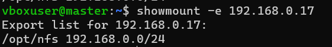
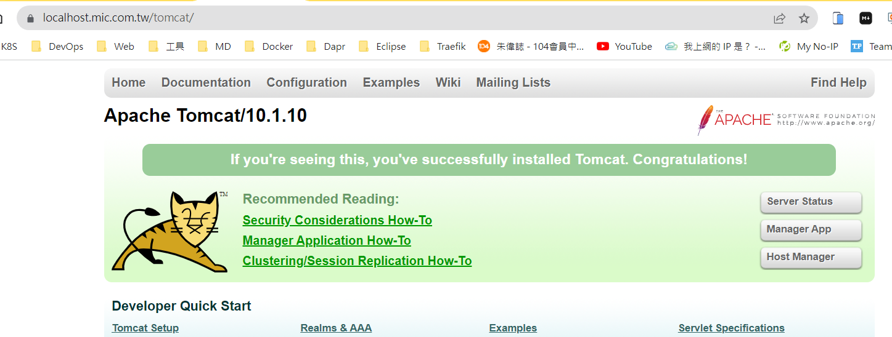

Kubernetes
Kubernetes 補充
錯誤
- Failed to allocate IP: No available IPs
因為當初在開啟 microk8s enable metallb:192.168.0.17-192.168.0.17 太少了。像是例子為只有開一個。 此時，可以先關掉 metallb，再重新開啟，並且將IP數字變多。
microk8s disable metallb
microk8s enable metallb:192.168.0.17-192.168.0.100
參考網址：https://discuss.kubernetes.io/t/addon-metallb/11790
知識
- 透過 MicroK8s 認識 Kubernetes 的 Service Account (服務帳戶)
-
建立別名：讓 microk8s.kubectl = kubectl
sudo snap alias microk8s.kubectl kubectl
-
如何取得 Pod 的資訊，並以 yaml 呈現。
kubectl get pod microbot -n dev -o yaml
-
進入Pod的console
kubectl exec microbot -it -n dev -- sh -
RBAC
k8s 在 1.8 版之後，引用了 Role-Base Access Control (RBAC，基於角色的訪問控制，好像有點繞舌) 做為授權 (Authorization) 的基礎，也就是一種管制訪問 k8s API 的機制。管理者可以透過 rbac.authorization.k8s.io 這個 API 群組來進行動態的管理配置。引用 https://ithelp.ithome.com.tw/articles/10195944
kubectl create namespace dev kubectl label namespace dev name=dev kubectl run microbot --/assets/image=dontrebootme/microbot:v1 -n dev
kubectl create serviceaccount monitor -n dev kubectl create clusterrole aweit --verb='' --resource='' kubectl create clusterrolebinding aweit --clusterrole=aweit --serviceaccount='dev:monitor'
microk8s kubectl create token monitor
-
Dashboard 與 Kubeconfig
-
開啟 Dashboard
microk8s enable dashboard -
登入頁面

-
如何產生 .kueconfig
mircok8s config
在本機建立 .kubeconfig 檔案，將上圖的文字貼上去。 -
重新上傳 .kubeconfig 檔案即可。
-
Token
microk8s kubectl create token [service account] microk8s kubectl create token default
Volume
- Type： emptyDir、hostPath、local、nfs、persistentVolumeClaim
apiVersion: v1
kind: Pod
metadata:
name: test-pd
spec:
containers:
- image: registry.k8s.io/test-webserver
name: test-container
volumeMounts:
- mountPath: /test-pd
name: test-volume
volumes:
- name: test-volume
hostPath:
# 宿主上目录位置
path: /data
# 此字段为可选
type: DirectoryOrCreate
-
nfs
-
[Ubuntu NFS 安裝教學] https://blog.devcloud.com.tw/ubuntu-nfs-install/
NFS Server IP： 192.168.0.17
showmount -e 192.168.0.17

如果要新增掛載目錄
# 建立共享資料夾
sudo mkdir /opt/nfsshare
# 編輯 NFS Server 的 Expose 設定
sudo nano /etc/exports
...
/opt/nfsshare 192.168.0.0/24(rw,sync,no_subtree_check,no_root_squash)
# 重啟
sudo systemctl restart nfs-kernel-server.service
# 顯示 Mount 資訊
showmount -e 192.168.0.17
- PV/PVC/Pod
apiVersion: v1
kind: PersistentVolume
metadata:
name: nfs
spec:
capacity:
storage: 1Mi
accessModes:
- ReadWriteMany
nfs:
server: 192.168.0.17
path: "/opt/nfsshare"
---
apiVersion: v1
kind: PersistentVolumeClaim
metadata:
name: nfs
spec:
accessModes:
- ReadOnlyMany
storageClassName: ""
resources:
requests:
storage: 1Mi
---
apiVersion: v1
kind: Pod
metadata:
name: hwchiu
labels:
app: hwchiu
spec:
containers:
- name: busybox
image: hwchiu/netutils:latest
volumeMounts:
- name: nfs-volume
mountPath: /nfs
volumes:
- name: nfs-volume
persistentVolumeClaim:
claimName: nfs
Tomcat & Volume
# PV: 先有 nfs server，並且建立好對應的資料夾，例如：/opt/nfsshare/demo/webapps
apiVersion: v1
kind: PersistentVolume
metadata:
name: nfs-demo-tomcat
spec:
capacity:
storage: 1Mi
accessModes:
- ReadOnlyMany
nfs:
server: 192.168.0.17
path: "/opt/nfsshare/demo/webapps"
---
# PVC: 建立 PV 請求
apiVersion: v1
kind: PersistentVolumeClaim
metadata:
name: nfs-demo-tomcat
spec:
accessModes:
- ReadOnlyMany
storageClassName: ""
resources:
requests:
storage: 1Mi
---
# Deployment: tomcat 鏡像，綁定 nfs 共用資料夾。
# 因為 tomcat 8 以後，會多一個 webapps.dir 資料夾，所以要執行 cp -r webapps.dist/. webapps/ 才能將資料夾與檔案全部搬移過去。
apiVersion: apps/v1
kind: Deployment
metadata:
name: tomcat-deployment-nautilus
labels:
name: webdep
app: demo
spec:
replicas: 1
selector:
matchLabels:
name: webpod
app: demo
template:
metadata:
name: webpod
labels:
name: webpod
app: demo
spec:
containers:
- name: tomcat-container-nautilus
image: tomcat
ports:
- containerPort: 8080
volumeMounts:
- name: nfs-volume
mountPath: /usr/local/tomcat/webapps
volumes:
- name: nfs-volume
persistentVolumeClaim:
claimName: nfs-demo-tomcat
---
# Service
apiVersion: v1
kind: Service
metadata:
name: tomcat-service-nautilus
spec:
selector:
name: webpod
app: demo
ports:
- port: 80
targetPort: 8080
---
# IngressRoute
apiVersion: traefik.io/v1alpha1
kind: IngressRoute
metadata:
name: tomcat-ingress-route
namespace: default
spec:
entryPoints:
- websecure
routes:
- kind: Rule
match: Host(`localhost.mic.com.tw`) && PathPrefix(`/tomcat`)
middlewares:
- name: test-stripprefix
- name: test-errors
services:
- name: tomcat-service-nautilus
port: 80
tls:
secretName: mic-tls
把 webapps.dist 目錄下的所有檔案，複製到 webapps 底下
cp -r webapps.dist/. webapps/
traefik: 把 /tomcat 去掉
# Middleware
apiVersion: traefik.io/v1alpha1
kind: Middleware
metadata:
name: test-stripprefix
spec:
stripPrefix:
prefixes:
- /tomcat
https://localhost.mic.com.tw/tomcat/

Namespace 狀態為 Terminal 時，如何刪掉？
kubectl delete namespace longhorn-system
kubectl get ns/longhorn-system -o json > longhorn-system.json
nano longhorn-system.json -> 清除
"spec": {
"finalizers": [
"kubernetes"
]
}
->
"spec": {
"finalizers": []
}
kubectl replace --raw "/api/v1/namespaces/longhorn-system/finalize" -f ./longhorn-system.json